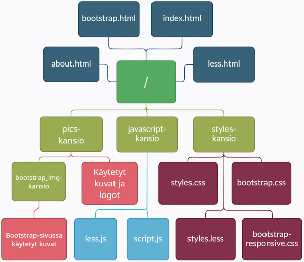

Henkilötiedot
- Nimi
- Toni Hiidenvuo
- Opiskelijanumero
- AA3689
- Ryhmäkoodi
- HTK20S1
Testaus ja validointi
- Testattu selaimilla
- Mozilla Firefox 83.0
- Google Chrome 87.0.4280.88
- Koodin validointi
- W3C Markup Validation Service
- W3C CSS Validation Service
Layoutin rakenne
Kansiorakenne
Käytetyt resurssit
- Sivuston taustakuva
- So White Pattern by Monika @ Subtle Patterns
- Navigoinnin koodi
- W3Schools
- Infot navin JS:n säätöön
- W3Schools
- HR-tagin stailaukset
- Glyph by Harry Roberts @ CSS-Tricks
- LESS-sivu
- lesscss.org
- Bootstrap-sivu
- Geo Bootstrap by Divshot @ GitHub
- Kansiorakenne-kuva
- Creately
- Nuoli-ikoni navissa ja footerissa
- Font Awesome